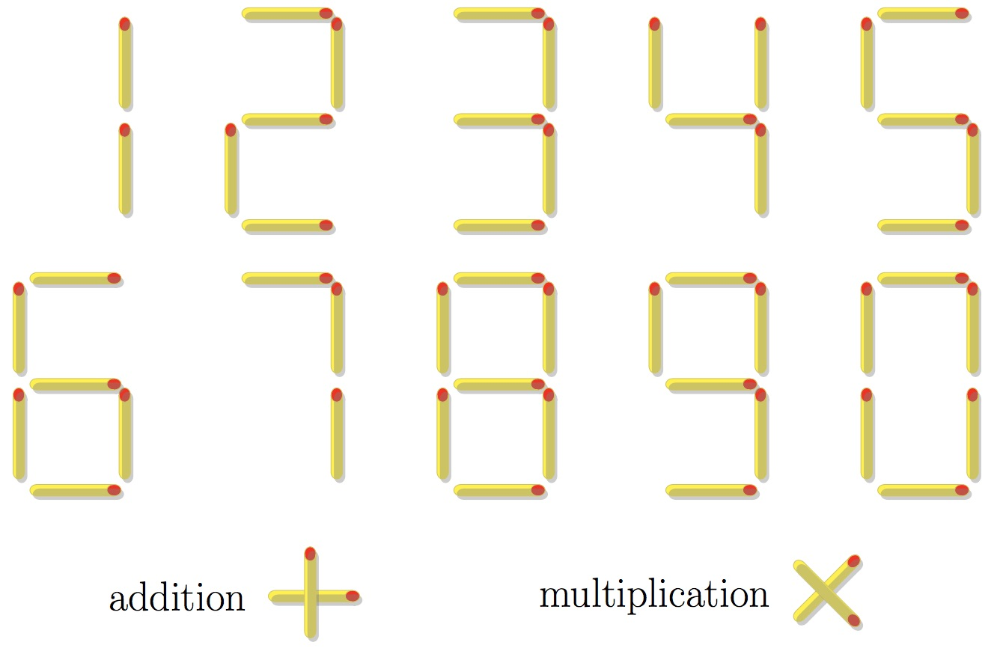

Define $M(n)$ to be the minimum number of matchsticks needed to represent the number $n$.
A number can be represented in digit form or as an expression involving addition and/or multiplication. Also order of operations must be followed, that is multiplication binding tighter than addition. Any other symbols or operations, such as brackets, subtraction, division or exponentiation, are not allowed.
The valid digits and symbols are shown below:

For example, $28$ needs $12$ matchsticks to represent it in digit form but representing it as $4\times 7$ would only need $9$ matchsticks and as there is no way using fewer matchsticks $M(28) = 9$.
Define $\displaystyle T(N) = \sum_{n=1}^N M(n)$. You are given $T(100) = 916$.
Find $T(10^6)$.